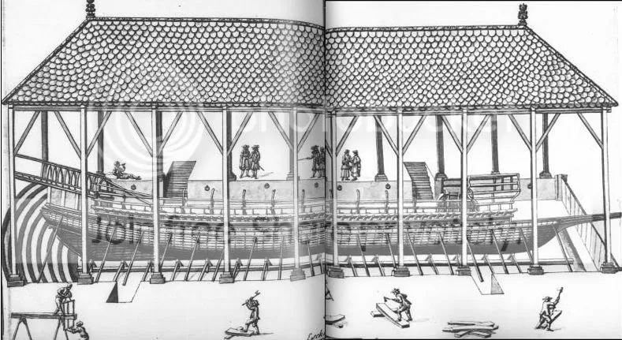

Несколько слов о том, как была организована работа плотников.
Как уже говорилось, стапель находился в предварительно крытом доке, кили и штевни были установлены накануне. Бригады с четными номерами работали на правом борту, нечетными – на левом. Вся совокупность работ была разделена на 10 этапов. Каждый из этих этапов мы рассмотрим подробно позднее, когда получим представление об основных конструктивных элементах корпуса галеры. Это вопрос непростой, учитывая проблемы стыковки галерной и общепринятой морской терминологии. Ограничимся пока просто перечнем основных операций, не вдаваясь в конкретное содержание каждой из них.

С гравюры, опубликованной в «Traité de la construction des galères » Барра де ла Пенна (Марсель, 1697).
На каждом этапе использовались предварительные заготовки, как и перед началом работ. В частности, все три составных части шпангоута – флор и два его удлинения с каждого борта (правый и левый футоксы) – были заранее собраны воедино в достаточно громоздкую конструкцию, вес которой, однако, не превышал шестидесяти килограмм, так что ее свободно могли переносить два человека. На каждую эскадру плотников приходилось по 14 шпангоутов. Бригады правого борта двигались от мидель-шпангоута в корму, а левого – в нос. Сразу после установки шпангоута сверловщики фиксировали их нагелями.
Установленные шпангоуты фиксировались наружными продольными связями – бархоутами, имеющими вырезы для каждого шпангоута. Именно благодаря этим продольным связям набранный из множества деталей корпус приобретал необходимую жесткость. Помимо бархоутов, или вельсов, которые ставились снаружи, имелись усиленные продольные связи также и внутри корпуса галеры. Назывались они на «галерном» языке escouets и contre escouets. Мне пока не удалось найти полного соответствия этим терминам в русском морском лексиконе. Да и англичане называют их скорее описательно, чем определенным термином: ”the thick stuff at the floorheads” (Shipbuilder’s Repository, 1789г.). Мы вернемся к этим терминам, когда более подробно будем изучать устройство корпуса галеры.
После этого устанавливали специальные подпорки, которые удерживали набор корпуса в заданном положении до самого конца постройки корабля.
На следующем этапе окончательно добивались необходимой жесткости корпуса путем установки стрингеров, а затем и бимсов, под которыми помещали три продольные балки (bicheries).. Одновременно первая эскадра устанавливала грот-мачту (l'arbre de mestre).
Следом переходили к наружной обшивке, начиная со шпунтового (самого нижнего, galbord) и следующего за ним (ribord) поясьев наружной обшивки. Устанавливали и подгоняли пиллерсы, затем окончательно завершали наружную обшивку галеры. Ставили битинги и продольные балки куршеи – центрального прохода вдоль диаметральной плоскости галеры. Затем возводили саму куршею. Приступали к сооружению постицы и связанных с ней балок. Начинали с мощных поперечных балок в носу и корме, на которые ставили продольные связи, создавая таким образом прямоугольную базу, которая служила опорой для весел. Устойчивость всей конструкции обеспечивалась набором поперечных кронштейнов – бакаляров.
Банки для гребцов и все связанные с ними конструктивные элементы ставили на девятом этапе работы. Тогда же навешивали руль.
Здесь основные работы плотников заканчивалась, в дело вступали конопатчики – две группы по 130 человек в каждой обеспечивали водонепроницаемость корпуса галеры. Материалы для конопатчиков – паклю и смолу – по мере продвижения работ подносили 20 учеников. Работа эта не занимала много времени и после ее завершения корпус практически был готов. Плотники, сверловщики и конопатчики уступали сцену другим действующим лицам.
Первыми появлялись столяры и краснодеревщики. Они входили в состав пяти эскадр. В первой эскадре было 10 человек краснодеревщиков, а со второй по пятую - по 14 столяров с помощниками в каждой – итого 77 человек (с учетом одиннадцати человек руководства). Параллельно с работой этой группы к делу подключались скульпторы (4 эскадры общей численностью 41 человек во главе с мэтром Матиасом). Таким образом, численность работников и прорабов, участвовавших в постройке галеры, перевалила уже за 1000 человек.
Именно на этом этапе появились экипажи лучших галер, находящихся в Марселе. Вместе с комитами (их должностные обязанности мы обсудим позже) галер Réale и Patronne на стапель прибыло до 400 человек для загрузки балласта, установки рангоута и такелажа. 255 из них были гребцы, которые понимали толк в оснащении галер.
Примечательным в организации работ является строгая ответственность руководителей всех степеней – от главного строителя до приказчиков – за выделенные им участки работы. Все они назначались поименно, из лучших специалистов своего дела. Помимо братьев Шаберов здесь были представители семейств Cadière, Reynoir (Renouard), Ollivier, Coulomb, хорошо известных среди корабельных мастеров того времени.
О заключительных этапах работы и выводе галеры из дока расскажем в следующий раз.